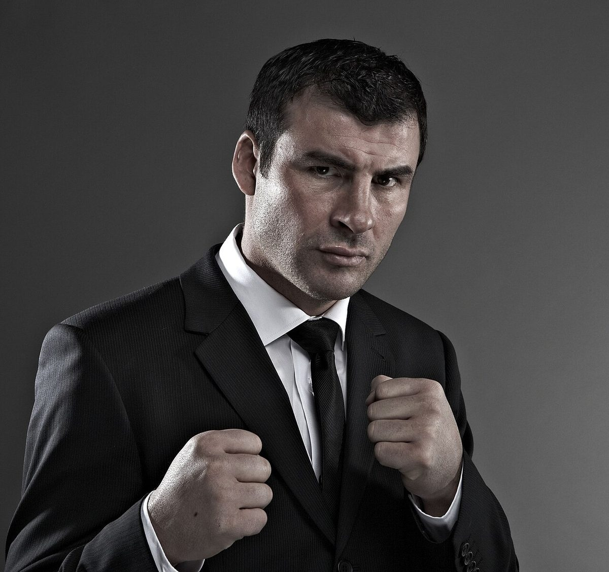

Lauren Price Makes Welsh Boxing History With Shutout Win Over Michaela Kotaskova to Become Undisputed Champion
The Olympic gold medallist swept all three judges' cards 100-90 in Cardiff to collect every major welterweight belt.

Olympic gold medallist Lauren Price became the first undisputed world boxing champion in Welsh history on Friday, November 20, 2026, defeating Czech challenger Michaela Kotaskova at the Utilita Arena in Cardiff. The 32-year-old southpaw from Ystrad Mynach secured the vacant WBO welterweight belt to unify all four major sanctioning body titles alongside the WBA, WBC, and IBF straps she already held. All three judges scored the 10-round contest 100-90 in Price’s favour, preserving her unblemished professional record at 11-0. Kotaskova, aged 35 and fighting out of Vienna, fell to 12-2-2.
Flawless scorecards at Utilita Arena
Price made her entrance to Dafydd Iwan’s Welsh anthem Yma O Hyd before 5,000 spectators in Cardiff. Despite Kotaskova holding a four-inch height advantage, Price controlled the distance with rapid hand speed and opened a cut over her opponent's eye during the second half of the bout. The victory followed Price's previous outing at the same arena on April 4, 2026, when she secured a 10-round points win over Puerto Rico's Stephanie Piñeiro Aquino despite sustaining a severe mouth laceration. This time, Price exited without significant damage after dictating every exchange across the 20 minutes of action.

The four-belt milestone Joe Calzaghe missed
The opportunity to fight for all four belts came together only 48 hours before the opening bell, following American boxer Mikaela Mayer's decision to vacate the WBO crown ahead of an upcoming rematch with Chantelle Cameron. By capturing the WBA, WBC, IBF, and WBO titles plus The Ring magazine belt, Price completed an achievement that eluded Wales' former long-reigning world champion Joe Calzaghe. While Calzaghe retired undefeated at 46-0 after unifying three major super-middleweight sanctioning bodies, he never held all four concurrently in the four-belt era. Price initially took her first world championship in May 2024 against Jessica McCaskill, before adding the IBF crown against Natasha Jonas in March 2025 at London's Royal Albert Hall.
Eyes on Chantelle Cameron and Claressa Shields
"As a professional everyone's dream is to become undisputed," Price said at ringside following the announcement. "I've ticked every accolade in boxing. I'm not finished". Boxxer promoter Ben Shalom stated that discussions will now turn toward multi-division champion Claressa Shields, alongside potential high-profile bouts against Cameron or Mayer. Shalom confirmed that the promotion aims to stage Price's next title defense in a Welsh stadium during the summer of 2027.